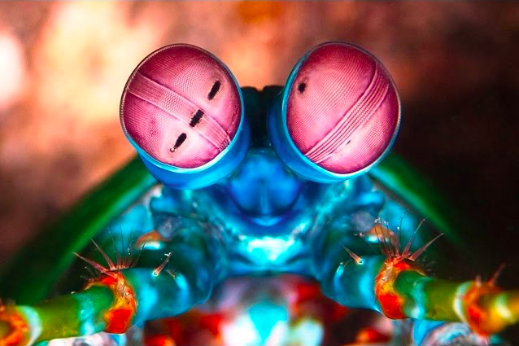
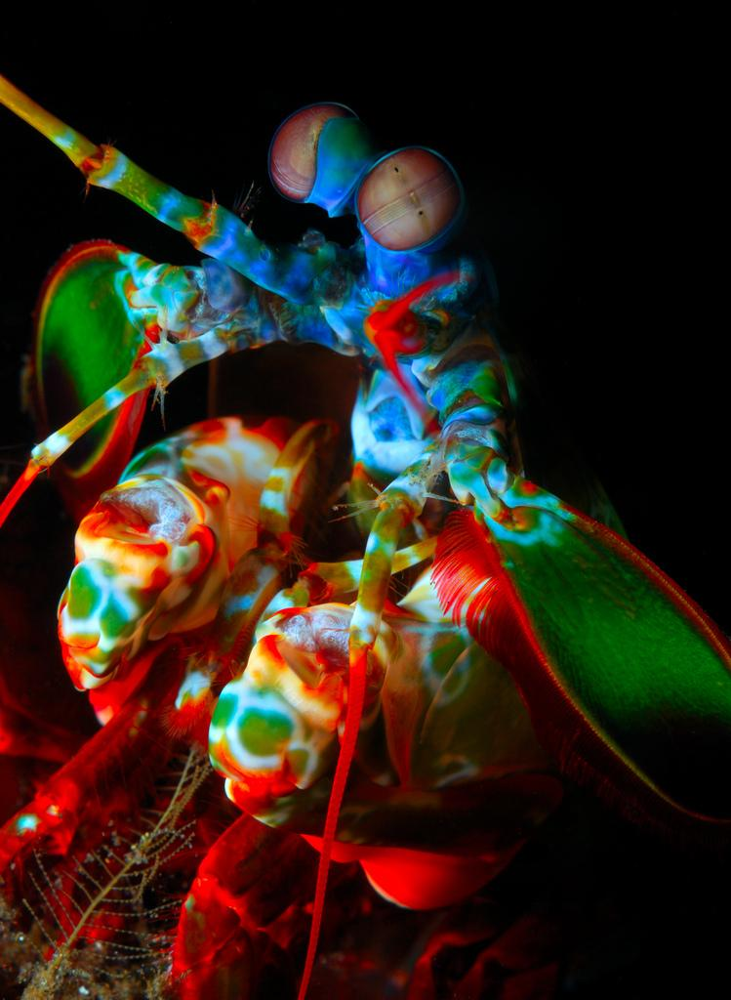

O Stomatopoda (Odontodactylus scyllarus), chamados popularmente de tamarutacas ou de lacraias-do-mar no Brasil, é uma ordem de crustáceos marinhos, que agrupa cerca de 400 espécies, caracterizadas principalmente pela morfologia da segunda pata torácica. São predadores ativos que caçam presas com o auxílio de um sentido de visão apurado. De natureza carnívora, alimentam-se de camarões, caranguejos, moluscos e até mesmo outros da mesma ordem. Apresentam uma grande variação de tamanho, que pode ir de poucos milímetros até aproximadamente 40 cm nas espécies maiores. Eles vivem em fundo consolidado, lodoso ou ainda arenoso, onde cavam seus buracos ou aproveitam-se dos orifícios deixados por outros animais para neles se instalar.
Fatos sobre o Stomatopoda
| Classificação Científica: | |
| Nome Científico | Odontodactyylus scyllarus |
|---|---|
| Reino | Animalia |
| Filo | Arthropoda |
| Subfilo | Crustácea |
| Classe | Malacostraca |
| Subclasse | Hoplocarida |
| Ordem | Stomatopoda |
Curiosidades sobre o Stomatopoda
A melhor visão do reino animal: Os olhos do Stomatopoda contêm milhões de células sensíveis à luz, chamadas de hastes e cones. As hastes permitem-nos ver a luz e o movimento e os cones permitem-nos ver a cor. Eles possuem o mais complexo sistema de visão de cores do mundo animal, enxergando 12 cores primárias correspondentes aos 12 pigmentos distintos presentes em sua retina. O sistema de visão dos estomatópodes possuem doze cones sensíveis à luz e outros quatro que filtram a luz, totalizando 16 cones, o que lhes permitem ver cores polarizadas e imagens multiespectrais.
Possuem uma força surreal: O Stomatopoda possuei dois apêndices raptoriais na frente do seu corpo. Estes aceleram com a mesma velocidade de um tiro de um rifle calibre 22 e em menos de 3 milésimos de segundo podem amarrar uma presa com 1500 Newtons de força. A critério de comparação, se um ser humano usasse 1/10 dessa velocidade, poderia lançar uma bola de baseball em órbita
